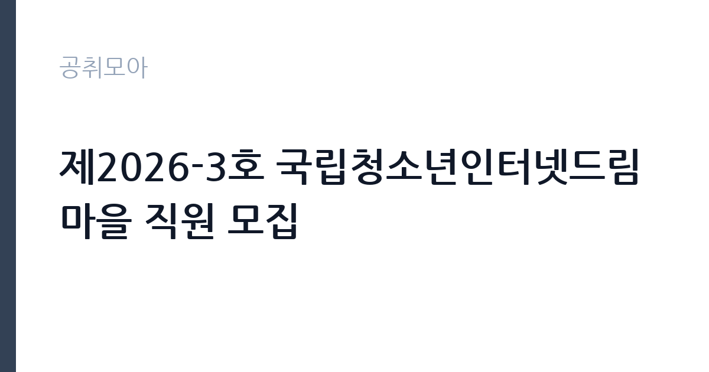

[공공기관] 제2026-3호 국립청소년인터넷드림마을 직원 모집
한국청소년상담복지개발원 · 전북 · 마감 2026-11-17 (D-15) · 출처 잡알리오

한눈에 보는 모집 조건
| 기관 | 한국청소년상담복지개발원 |
|---|---|
| 공고명 | 제2026-3호 국립청소년인터넷드림마을 직원 모집 |
| 고용형태 | 공무직 |
| 근무지 | 전북 |
| 게시일 | 2026-11-02 |
| 마감일 | 2026-11-17 (D-15) |
지원자격, 이렇게 읽으세요
- 공무직 : 일반직 4급(청소년상담복지) 1명
- 상담관련 분야의 석사학위 취득자
- 상담관련 분야 학사학위 취득자로서 관련 경력 2년 이상인 자
공무직 근로자는 공무원이 아니라 근로기준법이 적용되는 근로자이지만 기간의 정함이 없는 무기계약으로 채용되는 경우가 많아 정년까지 근무가 가능합니다. 채용은 공무원 시험과 달리 기관의 자체 전형으로 진행되고 인사 규정과 임금표를 적용받습니다. 이번 공고는 한국청소년상담복지개발원이 직접 진행하는 자체 전형입니다. 청소년상담복지 직무는 상담 관련 분야 석사학위 취득자이거나, 상담 관련 분야 학사학위를 취득한 뒤 관련 경력이 2년 이상인 경우 지원할 수 있습니다. 사업운영 직무는 고등학교 이상 졸업자로서 관련 분야 업무 능력이 있다고 인정되는 사람, 9급 이상 공무원으로 재직한 사람 등이 해당합니다. 두 직무 모두 요건이 다르므로 모집분야 표에서 본인 행을 먼저 확인해야 합니다. 공무직 채용으로 응시자격과 제출서류는 공고문에 정리되어 있습니다. 제출서류는 공고문에 적힌 순서대로 정리하면 담당자가 확인하기 쉽습니다. 학력이나 전공 요건이 없는 공고라도 제출서류 목록은 그대로 적용되므로 서류 준비 부담은 줄지 않습니다. 자격증은 유효 기간과 등록 상태를 확인해야 합니다. 갱신이 필요한 자격이라면 갱신 여부를 먼저 점검하십시오. 이 공고 원문에 적힌 응시 조건 문구는 '상담관련 분야의 석사학위 취득자' / '상담관련 분야 학사학위 취득자로서 관련 경력 2년 이상인 자' / '기타 이와 동등한 자격이 있다고 인정되는 자'입니다. 문구를 그대로 읽고 본인 해당 여부를 하나씩 표시해 두면 서류 단계에서 탈락하는 일을 줄일 수 있습니다.
이 공고의 포인트
이 공고의 첫 번째 포인트는 고용 형태입니다. 무기계약으로 채용되면 정년까지 근무가 가능해 재계약 부담이 없습니다. 반대로 기간제로 채용되는 공고라면 계약 기간을 먼저 확인해야 합니다. 두 번째는 업무 범위가 명확하다는 점입니다. 청소년 상담복지·사업운영 직무로 채용되므로 배치 이후 담당 업무가 크게 흔들리지 않습니다. 세 번째는 근무지입니다. 전북 지역 근무로 수도권 공고에 비해 지원자 분포가 넓지 않아 상대적으로 경쟁이 분산되는 경우가 있습니다. 선발 절차가 단순한 편이어서 서류와 면접 준비에 집중할 수 있습니다. 같은 직무로 함께 올라온 공고 가운데 접수 마감이 가장 늦은 편이라 준비 시간을 상대적으로 확보할 수 있습니다. 선발 인원은 공고문에 명시되어 있으니 모집분야 항목을 함께 확인하십시오.
전형은 어떻게 진행되나
전형은 서류심사와 면접심사를 기본으로 하고 직무에 따라 필기나 실기, 체력검정이 추가됩니다. 서류 단계에서는 응시자격 충족 여부와 제출서류 형식을 확인하며 이 단계에서 탈락하는 지원자가 적지 않습니다. 면접은 직무 이해도와 경험을 확인하는 방식으로 진행되고 발표는 개별 통보나 홈페이지 게시로 이뤄집니다. 최종합격 이후에는 결격사유 조회와 채용 신체검사가 이어지며 이 절차에서 문제가 확인되면 합격이 취소될 수 있습니다. 구체적인 전형 단계와 배점은 공고문에 표로 정리되어 있으니 원문을 기준으로 준비하십시오. 동점자 처리 기준이 공고문에 명시되어 있으니 배점 항목을 미리 확인해 두십시오.
원문에서 확인한 전형 방식
ㅇ 공무직 : 일반직 4급(청소년상담복지) 1명 1. 상담관련 분야의 석사학위 취득자 2. 상담관련 분야 학사학위 취득자로서 관련 경력 2년 이상인 자 3. 기타 이와 동등한 자격이 있다고 인정되는 자 ㅇ 공무직 : 일반직 5급(사업운영) 1명 1. 고등학교 이상 졸업자로서 관련 분야의 능력이 있다고 인정되는 자 2. 9급 이상 공무원으로 재직한 자 3. 기타 이와 동등한 자격이 있다고 인정되는 자
이런 분께 추천해요
- 상담 관련 학위·경력 요건을 충족하는 분
- 청소년 시설 근무 경험이 있는 분
- 입소형 시설의 교대·당직 근무를 수용할 수 있는 분
지원 전 체크리스트
- 응시자격 요건과 경력 기준을 충족하는가 — 경력은 증명서로 입증해야 합니다
- 무기계약 여부와 정년 기준을 공고문에서 확인했는가
- 제출서류 목록을 모두 준비했는가 — 누락 시 서류 단계에서 탈락합니다
- 접수 마감 2026-11-17 이전에 접수 방식을 확인해 제출했는가
모집 일정과 제출 타이밍
접수 마감은 2026-11-17이고 공고는 2026-11-02에 게시되었습니다. 준비 기간 15일 안에 서류 작성, 증빙 발급, 접수를 모두 마쳐야 하므로 주말을 포함해 일정을 미리 나누는 것이 좋습니다. 특히 경력 기술서나 직무수행계획서를 요구하는 공고는 작성에 시간이 걸리므로 첫날 초안을 잡으십시오. 서류 합격자 발표와 면접 사이 간격이 짧은 경우가 많아 면접 예상 질문은 서류 제출 전에 정리해 두는 편이 유리합니다. 마감 직전에는 접속이 몰리므로 여유를 두고 제출하십시오. 공휴일이 끼어 있으면 증명서 발급이 늦어질 수 있으니 발급 일정을 앞당기십시오.
직무 이해하기: 공공기관
국립청소년인터넷드림마을은 인터넷·스마트폰 과의존 청소년을 대상으로 치유와 상담 프로그램을 운영하는 한국청소년상담복지개발원 소속 시설입니다. 이번 모집은 두 직무로 나뉩니다. 일반직 4급(청소년상담복지)은 입소 청소년의 상담과 사례 관리, 프로그램 운영을 맡고, 일반직 5급(사업운영)은 시설 운영과 사업 예산 집행, 행정 지원을 담당합니다. 두 직무 모두 근무지는 전북입니다. 입소 생활과 연계된 업무가 많아 교대나 당직이 포함될 수 있습니다. 업무 강도와 근무 시간대는 부서 배치에 따라 달라지므로 면접에서 확인하는 것이 가장 정확합니다.
자기소개서 작성 팁
지원서는 지원 직무를 분명히 밝히고 관련 경험을 앞세우는 것이 핵심입니다. 상담 직무라면 담당했던 사례 수와 유형, 사용한 상담 접근, 슈퍼비전 경험을 구체적으로 쓰십시오. 사업운영 직무라면 운영했던 사업의 규모와 예산, 협력 기관과의 조율 경험을 제시하십시오. 청소년 시설에서 근무하려는 이유를 기관 사업과 연결하면 설득력이 높아집니다. 구성은 지원 동기, 직무 경험, 기여 방안 순서가 무난합니다. 지원 동기는 한국청소년상담복지개발원의 사업 중 본인이 관심을 가진 부분을 한 가지로 좁혀 서술하고 추상적인 표현은 줄이십시오. 직무 경험은 담당했던 업무와 규모, 결과를 수치로 제시하면 설득력이 올라갑니다. 기여 방안은 입사 후 첫 3개월과 1년 계획으로 나눠 쓰면 준비도가 드러납니다.
면접 준비 포인트
면접에서는 청소년 대응 경험과 프로그램 운영 방식을 확인합니다. 인터넷 과의존 청소년이 프로그램 참여를 거부할 때 어떻게 접근할지, 보호자와 갈등이 생겼을 때 어떻게 조율할지 묻습니다. 상담 직무는 사례 관리 기록의 정확성과 비밀 유지 태도가 평가 요소입니다. 사업운영 직무는 예산 집행과 시설 운영 경험을 구체적으로 답하십시오. 면접은 공고문에 적힌 직무 내용을 얼마나 이해하고 있는지 확인하는 질문으로 시작하는 경우가 많으니, 모집분야 문구를 그대로 읽어 두는 것이 도움이 됩니다. 마지막 질문 시간에는 근무 조건에 대한 확인 사항을 한 가지 정도 준비해 가면 성실성이 드러납니다.
급여·근무조건 읽는 법
한국청소년상담복지개발원은 알리오 2025년 결산 공시 기준 일반정규직 1인당 평균보수 5,572만원, 신입사원 초임 3,536만원으로 공시되어 있습니다. 이번 공고는 공무직 채용이므로 위 정규직 평균값이 그대로 적용되지 않고, 기관의 공무직 임금표와 직급(4급·5급)에 따라 보수가 정해집니다. 무기계약 여부와 정년 기준, 수당 항목을 공고문에서 함께 확인해야 총보상을 알 수 있습니다. 2026년 적용 최저임금은 시급 10,320원, 월 환산 2,156,880원(주 40시간·209시간 기준)입니다. 고용노동부 고시 제2025-47호로 확정된 금액입니다. 공고문에 금액이 제시되지 않은 항목은 원문 보수표나 처우 설명에서 확인해야 하며 확인되지 않은 수치는 쓰지 않는 것이 원칙입니다. 비교할 때는 월 급여뿐 아니라 상여·명절휴가비·복지포인트·초과근무수당까지 포함한 연간 총액으로 계산하십시오. 기간제라면 계약 기간 동안의 총액을, 무기계약이라면 호봉 상승과 정년까지의 누적 소득을 기준으로 판단하는 편이 정확합니다.
자주 묻는 질문
- 선발 인원은 몇 명인가요?
공고문의 모집분야 항목에 직종별 인원이 표로 제시되어 있습니다. 첨부된 공고문 원문에서 확인하십시오. - 근무지는 어디인가요?
전북 지역의 한국청소년상담복지개발원 소속 근무지입니다. 세부 주소와 출퇴근 조건은 원문 공고문에서 확인할 수 있습니다. - 보수는 얼마인가요?
채용 신분(공무직)과 기관 임금 규정에 따라 정해지며 구체적인 금액은 공고문 처우 항목에 제시됩니다. 금액이 공개되지 않은 경우에는 원문의 보수표를 확인하십시오.
함께 보면 좋은 공고
[공공기관] 2026년 한국특허정보원 체험형 청년인턴 채용 — 마감 2026-11-18[공공기관] 한국폴리텍대학 진주캠퍼스 행정지원직(사무직원 휴직 대체인력) 채용 공고 — 마감 2026-11-10[공공기관] 대구경북첨단의료산업진흥재단 2026년 3차 정원외 계약직원 채용공 — 마감 2026-11-17출처: 잡알리오 공개정보를 바탕으로 공취모아가 정리한 안내글입니다. 모집 조건·일정은 변경될 수 있으니 지원 전 반드시 원문 공고문을 확인하세요. 본 글은 정보 제공용이며 합격을 보장하지 않습니다.